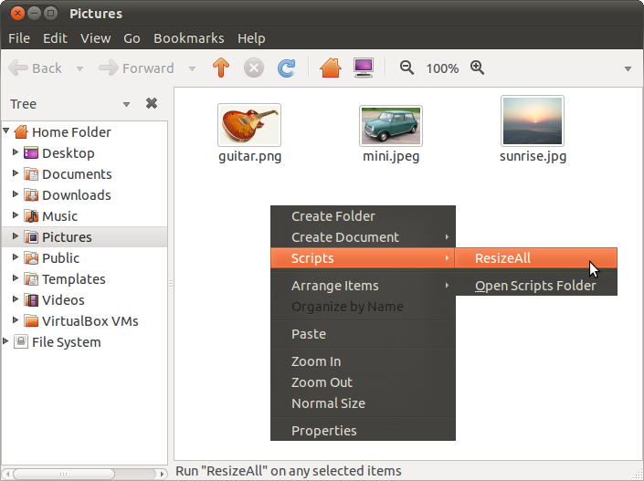

Σε αυτό το άρθρο περιγράφω τη δημιουργία μιας εντολής για μαζική σμίκρυνση εικόνων, η οποία εμφανίζεται όταν κάνουμε δεξί κλικ σε ένα παράθυρο του Ναυτίλου.

Έφτιαξα ένα σενάριο εντολών για τον περιηγητή αρχείων του GNOME, τον Ναυτίλο, το οποίο σμικρύνει μαζικά όλες τις
εικόνες με επεκτάσεις .jpg, .jpeg ή .png.
Χρησιμοποιεί το εργαλείο convert, από το πακέτο ImageMagick, άρα
μπορεί να τροποποιηθεί ώστε να σμικρύνει οποιονδήποτε τύπο εικόνας
υποστηρίζεται από το ImageMagick. Επίσης, χρησιμοποιεί το Zenity για
την προβολή αναδυόμενων παραθύρων στον χρήστη: αν δεν υπάρχει το
ImageMagick θα τσινίσει, αν όμως υπάρχει τότε θα σας ρωτήσει για:
- το όνομα του φακέλου μέσα στο οποίο θα μπουν οι μικρότερες εικόνες (από προεπιλογή είναι «thumbs»), και
- το ποσοστό κατά το οποίο θα σμικρυνθούν οι εικόνες (από προεπιλογή είναι 50%).
Τέλος, εμφανίζει μια μπάρα προόδου της διαδικασίας σμίκρυνσης.
Για να το χρησιμοποιήσετε, αντιγράψτε το αρχείο στον
κρυφό φάκελο .gnome2/nautilus-scripts/ μέσα στον Προσωπικό
σας φάκελο. Μετά την αντιγραφή, πρέπει να αλλάξετε τα δικαιώματά
του, και να το κάνετε εκτελέσιμο. Στο εξής, θα εμφανίζεται στο
μενού του Ναυτίλου, το οποίο αναδύεται όταν πατήσετε το δεξί κλικ μέσα
σε έναν φάκελο ή πάνω σε ένα αρχείο.
Κατεβάστε το σενάριο εντολών από έδω (δεξί κλικ και αποθήκευση, αν προσπαθήσετε να το δείτε στον browser τα ελληνικά γράμματα μάλλον δεν θα εμφανίζονται). Το σενάριο έχει δοκιμαστεί σε Ubuntu 10.10 με GNOME 2, και σε Fedora 15 με GNOME 3.


Μερικές ακόμα σημειώσεις
- Το εγχειρίδιο του Zenity υπάρχει μεταφρασμένο στα Ελληνικά χάρη στην προσπάθεια του Στέριου Π.
- Τα αναδυόμενα παράθυρα του Zenity, δεν βγαίνουν πάντα μπροστά από τα υπόλοιπα παράθυρα στην επιφάνεια εργασίας. Αυτό ίσως κάνει κάποιους χρήστες να περιμένουν για κάποια ανάδραση από το πρόγραμμα, ενώ το πρόγραμμα έχει ήδη βγάλει το παράθυρο πίσω από κάποιαν άλλη εφαρμογή. Το θέμα έχει συζητηθεί σε αναφορές σφάλματος στο GNOME (σφάλμα 448946) και στο Launchpad (σφάλμα 272083). Στο δεύτερο, υπάρχουν και patches, ξεπερασμένα τώρα πια -λόγω απεξάρτησης από το Glade. Οι αναφορές σφάλματος είναι κλειστές, μετά από απόφαση του προγραμματιστή ότι αυτή είναι η επιθυμητή λειτουργία του προγράμματος.